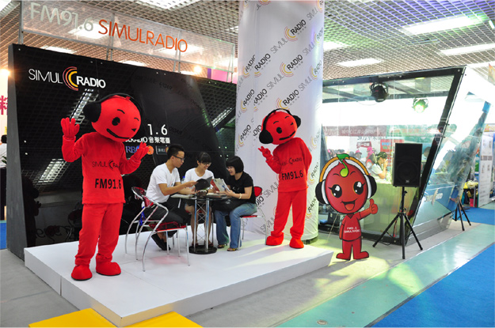
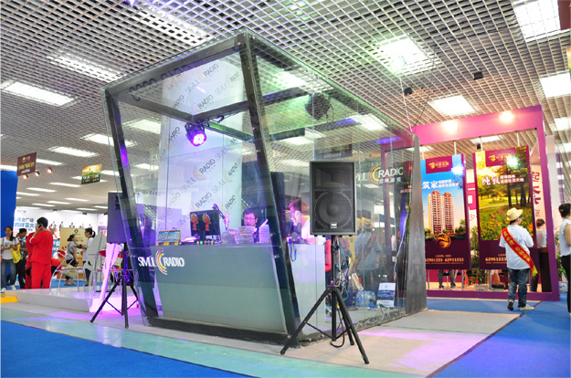
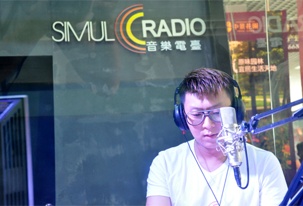
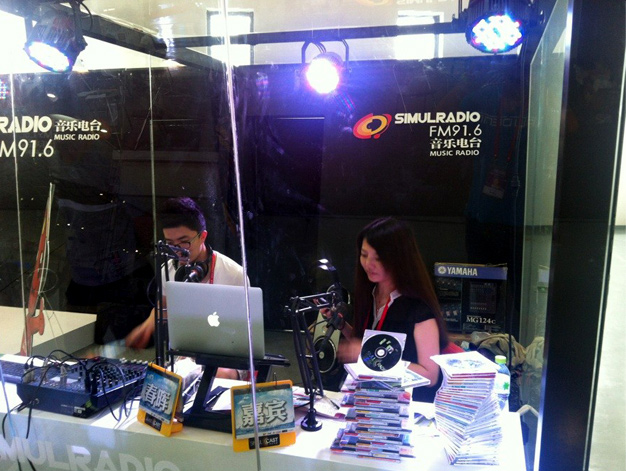
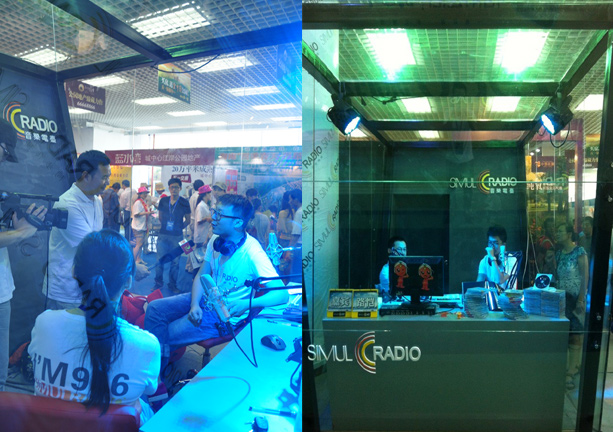

FM91.6 SIMULRADIO音乐电台亮相海南春季房展2012-03-01
为期三天的第16届海南春季房地产展示交易会在海口会展中心隆重举行。作为本次展会唯一进驻会场的广播媒体FM91.6 SIMULRADIO音乐电台的展位位于2号馆，以镜子呈现多折射面，超时空设计感的时尚移动直播间总面积30㎡，由直播间、舞台、会客间、采访间四种形式构造合成 ，每天6小时不间断的实时现场直播房展会最近报道！另外FM91.6 SIMULRADIO音乐电台的形象代言人“SIMULRADIO MUSIC BABY 音乐宝宝”也同时亮相会展中心，成为房展会又一道亮点！